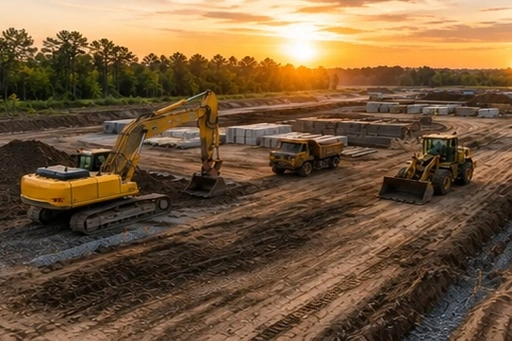

Разработка грунта и котлованы
Копка котлованов под фундамент и здания с контролем глубины, откосов и отметок.

Промышленные и коммерческие объекты
Котлованы под фундамент, устройство шпунта Ларсена, траншеи под сети, планировка территории, обратная засыпка с уплотнением, вывоз грунта и подготовка основания.
Работаем собственной техникой с операторами на складах, ангарах, производствах и коммерческих зданиях — от разбивки осей до сдачи площадки под фундамент и сети.
Работаем с юридическими лицами с НДС и с физическими лицами — на промышленных и коммерческих объектах.
ТопАгроБел выполняет земляные работы для промышленного, складского и коммерческого строительства. Разрабатываем грунт, устраиваем котлованы и траншеи, планируем территорию, выполняем обратную засыпку с уплотнением и готовим основание под фундамент.
Собственный парк техники и ИТР на площадке позволяют держать объёмы, отметки и сроки в одной ответственности. Также выполняем наружные сети, дороги и благоустройство.
Комплекс земляных работ для промышленного строительства — отдельно или в связке с фундаментами и сетями.
Копка котлованов под фундамент и здания с контролем глубины, откосов и отметок.
Погружение и извлечение шпунта для крепления котлованов, ограждения выработок и защиты от обрушения грунта.
Земляные работы под водопровод, канализацию, теплотрассы и другие наружные сети.
Вертикальная планировка, отсыпка и подготовка площадки под строительство и покрытия.
Послойная засыпка пазух и траншей с уплотнением до проектных показателей.
Организация вывоза на полигон или складирование на участке по согласованию с заказчиком.
Доведение дна котлована и основания до готовности под фундаментные работы.
Подбираем состав работ под назначение объекта, геологию, объёмы, логистику техники и график следующих этапов строительства.
Подготовка площадки, котлованы и земляные работы у коммерческих объектов.
Котлованы, планировка и подготовка площадки под складские здания и проезды.
Разработка грунта и основание под металлокаркас и быстровозводимые конструкции.
Котлованы, траншеи и планировка под промышленные корпуса и цеха.
Планировка, отсыпка и подготовка территории под строительство и эксплуатацию.
Земляные работы задают геометрию всего объекта. Берём котлован, отметки и вывоз грунта в одной ответственности: своя техника, ИТР на площадке, сроки и слово перед генподрядчиком.
Ждут аренду экскаватора или самосвала — объект стоит, пока техника не приедет по чужому графику.
Без прораба и мастера отметки, откосы и объёмы «держатся на честном слове» бригады.
Подрядчик «только выкопал» оставляет вывоз грунта, планировку и подготовку основания на заказчике.
Нет резерва людей и техники внутри одной организации — график зависит от того, свободна ли бригада.
Смета растёт по ходу: допы по объёмам, простои, чужая техника и переделки отметок.
Генподрядчику сложно планировать фундамент и сети: обещали выйти — сдвинули, согласовали объём — переиграли.
Ошибки по отметкам и откосам всплывают уже в котловане: переделки и потери времени.
Свой парк техники с операторами: не ждём аренду и не останавливаем объект из‑за чужого графика.
На площадке работают прорабы и мастера: контроль объёмов, отметок, откосов и сроков каждый день.
От разработки до вывоза грунта, засыпки и подготовки основания — одна ответственность.
Выдерживаем график за счёт возможности переключать ресурсы внутри организации, а не ждать свободную бригаду.
Стоимость работ всегда с дисконтом для заказчика.
Держим слово: согласовали — делаем. Генподрядчику просто планировать фундамент, сети и сдачу объекта.
Глубокий анализ проектной документации и исходных данных до выхода техники на площадку.


Видеоотзывы представителей компаний, для которых мы выполнили земляные работы на промышленных и складских объектах. Материал снят и находится на этапе монтажа.
Отзыв о разработке котлована и планировке площадки будет добавлен после съёмки.
Отзыв о вывозе грунта и подготовке основания будет добавлен после съёмки.
Отзыв о работах на действующем объекте будет добавлен после съёмки.
Отзыв о земляных работах под ангар будет добавлен после съёмки.

Олег Олегович · главный инженер
Стоимость зависит от объёма, глубины, типа грунта, вывоза и условий на площадке. Оставьте номер — перезвонит сам.
Или сразу: +375 (29) 128-62-17 · topagrobel@mail.ru
Состав земляных работ зависит от назначения объекта, объёма разработки, глубины котлована, типа грунта, расстояния вывоза и условий действующего производства.
Смотрите, как ТопАгроБел работает на промышленных и складских объектах.